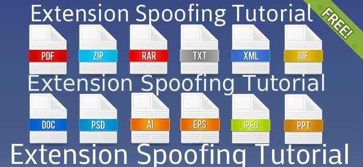

NO DOWNLOADS required !! NO external Tool Needed !!
Change the extension of your .exe to .pdf .docx , .mp3 !! Real Method ….. !!
This tutorial will show you how to make your .exe (or .com/.scr) files look like .jpeg/.mp3 or any other filetype (my favourite is .pdf and .docx)!
By normally changing the extension to e.g .mp3, will corrupt your file, but with this exploit your file will still be executable!
Also this is no FUD tutorial . This is just a technique to spoof the extension using the loopholes in windows